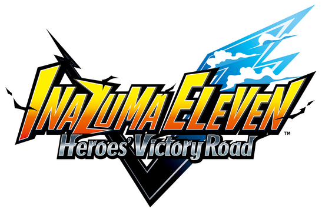

<!DOCTYPE html>
<html lang="es">
    <head>
        <meta charset="utf-8"> 
        <meta name="viewport" content="width=device-width, initial-scale=1.0">
        <meta name="author" content="Alvaro Atienza">
        <link rel="stylesheet" href="../css/juego.css">
        <link rel="stylesheet" href="../css/styles.css">
        <link rel="preconnect" href="https://fonts.googleapis.com">
        <link rel="preconnect" href="https://fonts.gstatic.com" crossorigin>
        <link href="https://fonts.googleapis.com/css2?family=Stack+Sans+Text:wght@200..700&display=swap" rel="stylesheet">
    </head>
</html>
<body>
    <header class="info-juego">
        
    </header>

    <p id="linea"></p>

    <div id="flex-container">
        <aside class="info-juego">
            <h4>Compralo aqui:</h4>
            <br>
            <nav class="plataformas">
                <a href="https://www.nintendo.com/es-es/Juegos/Nintendo-Switch-2-Edition/INAZUMA-ELEVEN-Heroes-Victory-Road-Nintendo-Switch-2-Edition-2950552.html">
                    
                </a>
                <br>
                <a href="https://store.playstation.com/es-es/product/JP0720-PPSA22207_00-INZMGAMEDELUXE00">
                    
                </a>
                <br>
                <a id="xbox" href="https://www.xbox.com/es-es/games/store/inazuma-eleven-heroes-victory-road-edición-deluxe/9NLB0293T63Q">
                    
                </a>
                <br>
                <a href="https://store.steampowered.com/app/2799860/INAZUMA_ELEVEN_Heroes_Victory_Road">
                    
                </a>
            </nav>
        </aside>

        <main class="info-juego">
            <section>
                <p id="info">Prepárate para el regreso triunfal de una de las sagas de fútbol y RPG más queridas.<br>
                Inazuma Eleven: Victory Road no es solo un nuevo juego, ¡es una celebración de<br>
                toda la franquicia con mecánicas revolucionarias y una historia fresca que te atrapará!</p>
                <br>
                <ol>
                    <li>
                        <h3>Unete al South Cirrus en el modo historia</h3>
                        <p>Conoce a Unmei Sasanami, un chico que ha renunciado al fútbol y vive en la sombra<br>
                        de la gloria del pasado de Inazuma. Él es tu ancla en un mundo donde el fútbol ha<br>
                        caído en el olvido, ahora relegado a un club casi abandonado.</p>
                    </li>

                    <li>
                        <h3>Revive las epocas de gloria de Inazuma Eleven.</h3>
                        <p>Desde sus principios hasta su ultima aventura, revive cada<br>
                        partido en los zapatos del raimon, recapitulando toda su historia<br>
                        para luego hacerle frente con tu propio equipo a esos legendarios<br>
                        equipos.</p>
                    </li>

                    <li>
                        <h3>Domina el estadio con tus 11 legendarios</h3>
                        <p>Haz frente a amigos y rivales de todo el mundo con el modo<br>
                        online de Inazuma Eleven Victory Road, crea estrategias con<br>
                        el nuevo modo "Tactical Play" dominando el partido como entrenador<br>
                        o como sus jugadores y asciende a la cima del futbol</p>
                    </li>
                </ol>
            </section>
            <br>
            <div id="video">
                <iframe width="560" height="315" src="https://www.youtube.com/embed/g8MDQRe5b7s?si=9DGhtUvS2pLAffDR" title="YouTube video player" frameborder="0" allow="accelerometer; autoplay; clipboard-write; encrypted-media; gyroscope; picture-in-picture; web-share" referrerpolicy="strict-origin-when-cross-origin" allowfullscreen></iframe>
            </div>
        </main>
    </div>

    <footer>
        <p>Me puedes encontrar en las siguientes redes:</p>
        <nav>
            <a href="https://www.instagram.com/the_atienzich">INSTAGRAM</a>
            <a href="https://www.tiktok.com/@the_atienzich">TIKTOK</a>
        </nav>
    </footer>
</body>
</html>